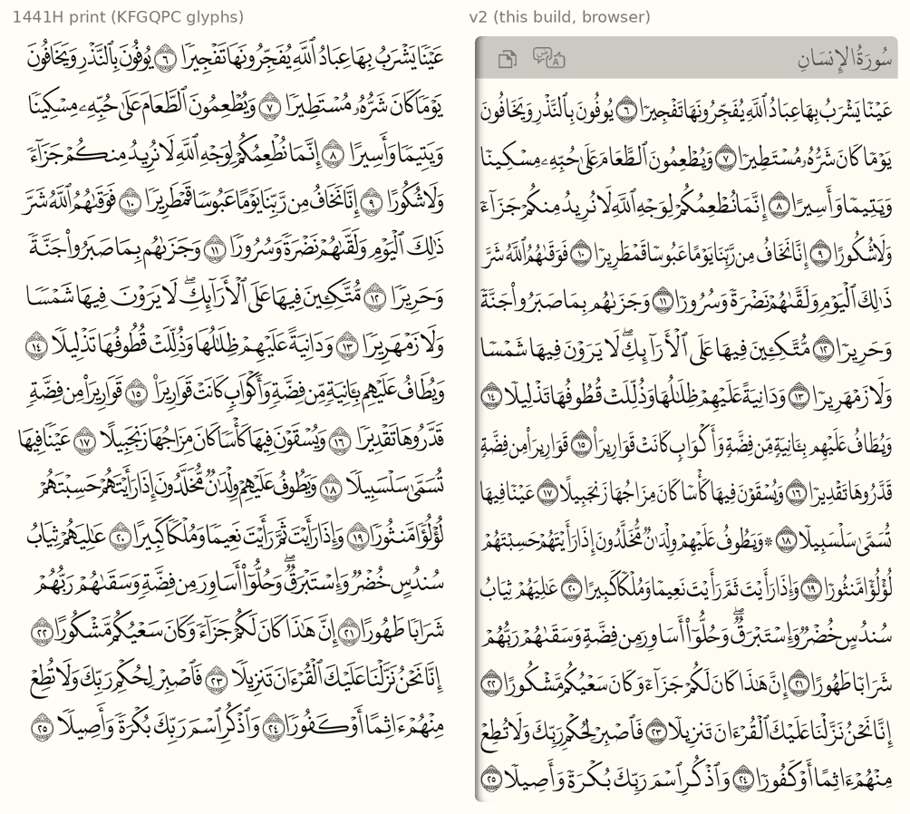
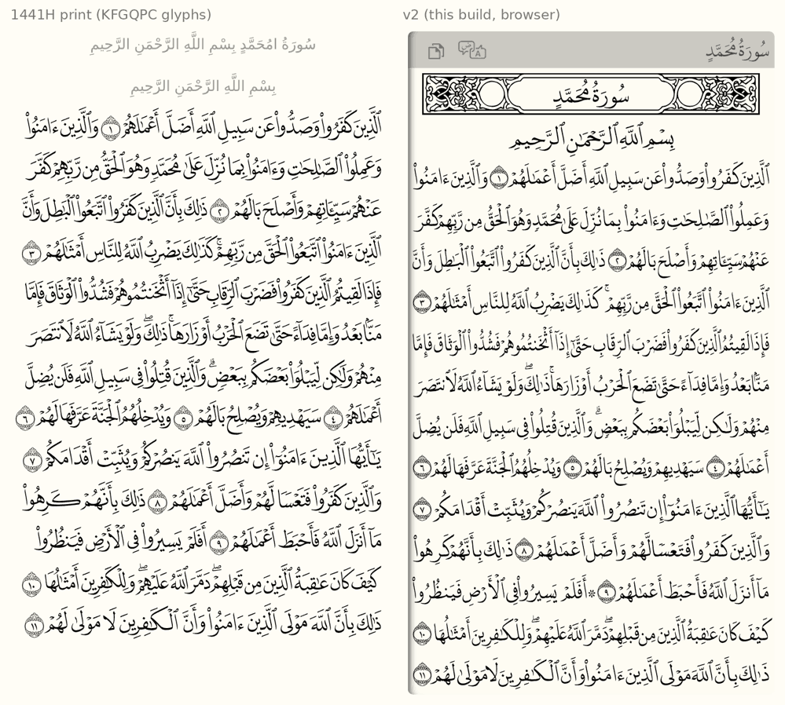

v2.0 — design decisions¶
Layouts¶
| 1441H (default) | 1405H (option) | IndoPak 15-line (option) | |
|---|---|---|---|
| Font | DigitalKhatt New Madina (hb/madina.otf) |
DigitalKhatt Old Madina (hb/oldmadina.otf) |
DigitalKhatt IndoPak (hb/indopak.otf) |
| License | OFL 1.1, no Reserved Font Name | OFL 1.1, no Reserved Font Name | OFL 1.1, no Reserved Font Name |
| Line breaks | KFGQPC 1441H print (src/db/v2/data/print-1441H-lines.json, see below) |
DigitalKhatt quran_text_old_madinah.ts (MIT); same breaks as the v1 Madina05 DB |
DigitalKhatt quran_text_indopak_15.ts (MIT) |
| Line width | 16200 font units | 16400 font units | 16400 font units |
IndoPak was added at the user's request; its text and pause marks will need their own check against Tanzil (IndoPak spelling conventions differ).
The two layouts break lines differently on ~37% of lines (5658 of 9046 lines have the same word count).
Text: Tanzil is the source¶
Tanzil stays the authoritative text. The DigitalKhatt texts are used only
for line breaks. Tanzil words are converted at build time to the encoding the
fonts expect (src/db/v2/tanzil_encoding.py): decomposed hamza with U+034F,
no tatweel before dagger alef, ى → ي where it carries a vowel or follows kasra,
+ digits for aya numbers, ۞/۩ attached to their word, and the open tanween
ࣰ ࣱ ࣲ derived by the tajweed rule (open before idgham/ikhfa letters, stacked
before throat letters and hamzat wasl, plain vowel before the iqlab meem).
Checked over the whole Quran (src/db/v2/validate_encoding.py):
| Reference | Identical tokens | Pause marks only | Other |
|---|---|---|---|
| 1405H text | 84,112 / 84,116 | 1 | 3 (DigitalKhatt spacing quirks around ۞ ۩, v1 bug below) |
| 1441H text | 83,764 / 84,116 | 352 | 1 (v1 bug below) |
- Every letter of Tanzil matches both prints. The 1441H print revised 352
pause marks (waqf); Tanzil keeps the earlier ones. Decision: the
1441H layout uses the 1441H print's pause marks
(
tanzil_encoding.apply_pause_marks, aligned on text without marks; letters and vowels always stay Tanzil's). Result: 84,116 / 84,116 tokens identical. - v1 bug found: page 254 (13:37) — the v1 DB has no ﴿٣٧﴾ marker and puts "مَا" on line 7 instead of line 6.
Stretching letters in browser text: position features in the font¶
Per-letter stretching (DigitalKhatt's cv01/cv02/cv10–cv18) cannot be
done with nested spans: joining breaks (img/page3-per-letter-spans-broken.png),
and even with ZWJ at span edges kerning and cursive attachment are lost
(words drift up to 12px at 40px).
So the fonts are extended (src/db/v2/font_patch.py):
- At build time HarfBuzz justifies each line with per-letter features
(
justify.justify_line), exactly like DigitalKhatt's own justifier. - Stretching never changes a word's glyph count (verified on all 19,482 stretched words of 1441H and 25,204 of 1405H), so each stretched word is recorded as "glyph at position k becomes glyph g′".
- The font gets one AlternateSubst lookup (g → its stretched variants) and
features
jp01…jpNN:jpKKswaps the glyph at position KK of the word, the CSS value picking the variant. These lookups run after all others, so GPOS (kerning, cursive, marks) sees exactly HarfBuzz's glyphs. - Each word is one span:
<span style='font-feature-settings: "jp04" 3'>…</span>(since the CoreText finding below, written"q043": an on/off twin of the same feature).
Results (Chromium, 40px): every word within 0.015px of HarfBuzz, every
line within 0.08px of its target, on 1441H pages 3, 50, 300 and 1405H page 3.
See img/1441h-page3-jp-chromium.png.
The patched fonts are renamed (OFL good practice) and rebuilt with the DB, since the alternate lists depend on the corpus.
Open¶
- Firefox (not installable in this workspace): untested; it shapes with HarfBuzz, like Chrome.
- Safari/CoreText (iOS 18, measured with
demo/diag.html): custom features work, but CoreText ignores a feature's value in the nested AlternateSubst and always takes alternate 1, so stretched words came out up to 0.76em off. Fixed by giving the font one on/off feature per (position, alternate) pair (q043=jp04value 3); the runtime emits those everywhere. Afterwards every stretched word is within a pixel of Chrome. Left: two words with a kashida carrying hamza plus CGJ (لِـٔ͏َادَمَ+0.22em,يَٰٓـٔ͏َادَمُ−0.11em on page 6) still differ. - Pages 1-2, sura titles, basmala lines.
Runtime (Phase 4)¶
<script src=".../quran-madina-html.js" data-layout="1441H"> (default 1441H,
or 1405H) loads assets/db/v2/Madina-<layout>.json and its woff2 font. A page
that sets data-font without data-layout keeps the v1 DBs.
- Every v2 line gets its row from
lines[page][line]: width (em), centering for titles/basmala/narrow lines,scaleXfor the few shrunk lines. - Words are spans with their
font-feature-settings; spaces are inline-block spans of the exact width. The words=, highlight=, error= and spacer paths all use the same builder (v2AppendWords), so selections keep the page geometry. - Copy/paste maps the font encoding back to standard Uthmani (CGJ removed, hamza recomposed, open tanween → regular).
- No font-size anchors or interpolation: everything is in em.
Screenshot: img/v2-runtime-chromium.png (page 3, highlight/error, words=,
inline quote, page 1).
Checked against the real Tanzil file (Uthmani 1.1, downloaded on
2026-10-16 without marks). Its letters and vowels match the text recovered from
the v1 DB on every aya; the only difference is 17:7 لِيَسُـۥٓـُٔوا۟, where
Tanzil puts a tatweel under the small waw (now handled by
POST_CONVERSION). Built from that file, the 1441H DB is byte-identical to
the committed one.
When the Tanzil text has no pause marks (marks=false), the builder takes the
pause marks and the ۞ and ۩ signs from the layout's print text (they are not
in the text itself either: ۞ 199, ۩ 15). For 1441H that changes nothing, since
its pause marks come from the print anyway. For 1405H it differs in one
place, 19:38 يَأْتُونَنَاۖ, where DigitalKhatt's 1405H text has no mark. The
committed 1405H DB keeps Tanzil's mark; to rebuild it, download with marks:
index.php?quranType=uthmani&outType=txt-2&marks=true&sajdah=true&rub=true&tatweel=true&agree=true.
Matching the 1441H print (replaces the "hybrid" fitting)¶
The first v2 pages had overlapping words and crowded lines. Compared with the 1441H print (King Fahd Complex's own QCF4 data: one glyph per word, traced from the printed page, with the print's line breaks), three causes showed up:
- Line breaks. DigitalKhatt's "madina" text breaks 1,620 of 8,802 text lines differently from the 1441H print. 573 of its lines start with an aya number; the print never does that (0 lines). Lines that gain a word become overfull.
shrr. This shrink feature overlaps letters: ٱلرِّقَابِ goes from 2351 to 1141 units. DigitalKhatt's own renderer never uses it. v2 had put it on 2,333 words.- Squeezed spaces. On dense lines the print keeps its gaps and writes the words narrower (up to ~25%), and never touches aya numbers. v2 cut the spaces to 0.06 em, then scaled the whole line, aya numbers included.
The font size was not the cause: the DigitalKhatt font at z = 0.92 is
close to the print (0.96 would match it exactly).
What changed:
- Line breaks come from the print.
extract_print_lines.pyreduces the page data of thequran-qcf4package (JSON: MIT) to the first and last token of each line, stored assura:aya:indexwith the print's separate ۩ folded into its word. No glyphs or text are kept. Narrow lines (pages 1-2, some sura ends) take the print's width. The 1405H layout keeps DigitalKhatt's breaks, which already match the 1405H print. - Gaps follow the print. Gaps are measured ink to ink, band by band
(
ink.py: a word's leftmost and rightmost ink per 20-unit band), as a share of the line width. Values are from every 3rd page of the print:
| gap | p5 | median | p95 | may move |
|---|---|---|---|---|
| word / word | 0.0058 | 0.0109 | 0.0181 | 0.55–1.65× |
| word / N | 0.0095 | 0.0102 | 0.0201 | 0.93–1.9× |
| N / word | 0.0078 | 0.0086 | 0.0097 | 0.91–1.13× |
A space can be negative: the word boxes then overlap, but their ink never
does.
- Lines are fitted with the words (justify.fit_line_print):
- Loose line: gaps open up to 1.2×, then letters stretch (DigitalKhatt's
kashida and alternates, unchanged), then the gaps take the rest.
- Dense line: gaps tighten within their range, then the words get
narrower (c, a scaleX on each word span, down to 0.8, never on aya
numbers). Only then is the whole line scaled (x).
- shr1/shrr are no longer used.
| 1441H, every 10th page | word pairs touching | closest gaps (p1) | word gaps median / p95 |
|---|---|---|---|
| 5 of 6,690 | 0.0050 | 0.0112 / 0.0188 | |
| v2 before | 100 of 6,697 | 0.0000 | 0.0106 / 0.0281 |
| v2 now | 2 of 6,689 | 0.0056 | 0.0138 / 0.0181 |
"Touching" means within 1px at a 1600px line. 1441H now has 1,438 lines with
narrowed words (277 below 0.9) and 20 line-scaled lines; 1405H has 885 and 7.
test/v2_layout_test.py checks that every line has the print's words, that
no line starts with an aya number, that no word uses shr*, and the closest
gaps on sample pages.

